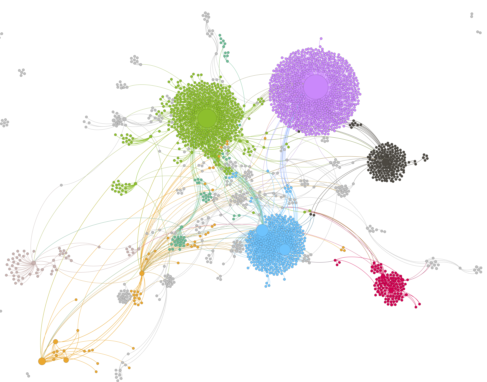
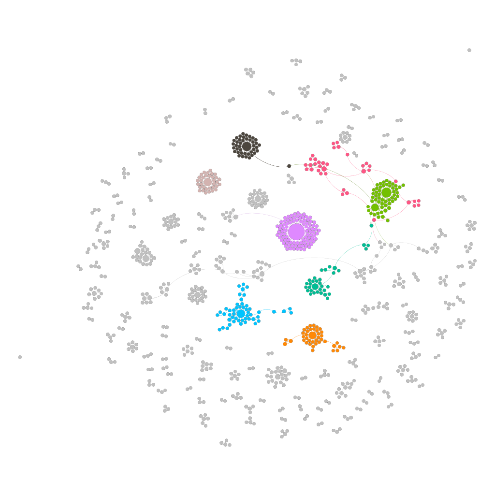
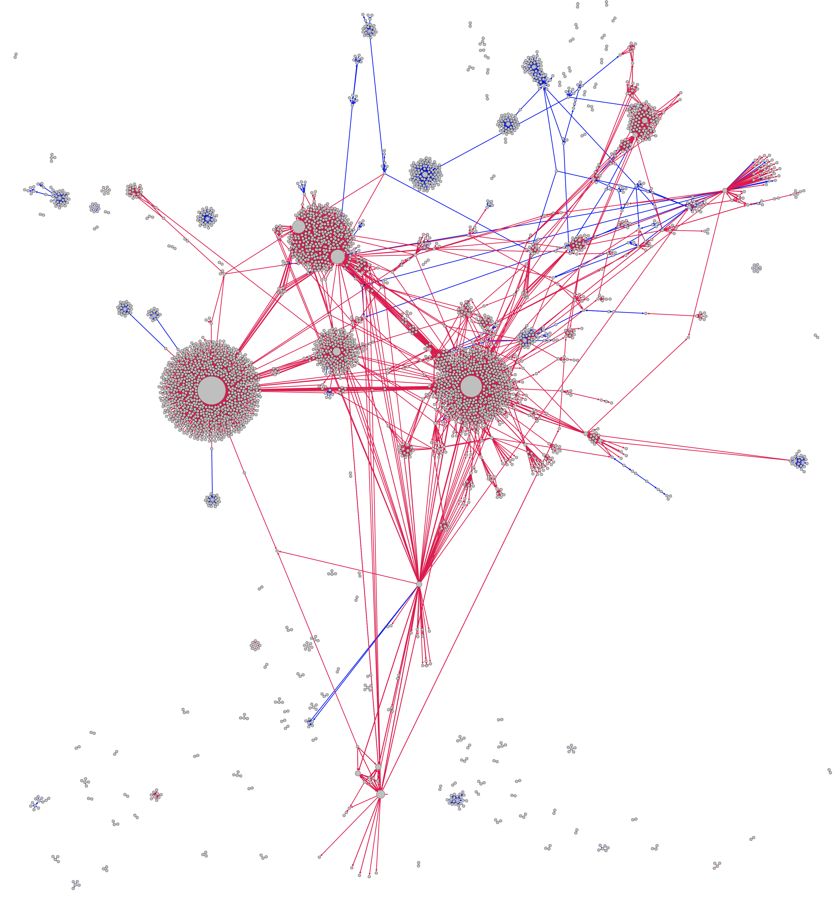

- Sun 13 November 2016
- Posts
- Ryan Horne
- #reporthate, #social-networks, #whywereafraid, #twitter
With increasing social media incidents of election-related violence on twitter and social media, I decided to perform a quick network analysis of #ReportHate and whywereafraid (which, as of this writing, has removed its twitter link from its site). I am interested in examining the development of these online communities, if there are significant overlaps between them, and if there are opportunities for increased cooperation.
[caption id="attachment_689" align="alignnone" width="4937"]

The main component of the #ReportHate network. Dr. Singh's community is in purple, the SPLC is in green, and the alt-right grouping is in red.[/caption]First, I looked at each network in isolation. I started with the network formed around #ReportHate, which consists of 2,781 nodes, 4,217 edges and 79 components. (A quick network primer: nodes are users or hashtags, while edges represent users mentioning a hashtag or another user. Components are parts of the graph where every node can trace a path through a number of edges to another node, and degree is the number of edges connecting a node to other nodes).
Surprisingly to me, the SPLC (@SPLCENTER) is not the node with the highest degree; that honor belongs to Dr. Simran Jeet Singh (@SIKHPROF), a professor of religion at Trinity University, despite SPLC's approximate 9-1 advantage in followers (96.3 thousand to 10.7 thousand). It will be interesting to see if this disparity closes as more individuals are aware of the hashtag.
The top ten nodes by degree are dominated by two very different philosophies. @SIKHPROF, @SPLCENTER, @SHAUNKING, @AMYWESTERVELT, @TRUMPSWORLD2016, and @THIERISTAN are certainly aligned with progressive causes and appear to be supporters of the SPLC's efforts to accurately report hate crimes. However, the next major node on the graph, @STOPHATECRIMEZ, appears to be an alt-right account (including an emoticon frog as a stand-in for Pepe the Frog), which tweets links to accounts of violence against Trump voters (dominated by links to YouTube) and refutations of violence committed by Trump supporters. The accounts that retweeted this account likewise seem to be dominated by alt-right and far right wing individuals, and the hashtag #HATECRIME is almost exclusively used by this group.
Moving on from the alt-right component of the graph, it is apparent that there are several large clusters of SPLC supporters that as of yet do not have much interconnectivity. As this is a relatively new hashtag, I expect a growth of connections between clusters; if not, there is is an opportunity for the “central” nodes of each cluster to reach out to each other and establish a more robust online community. Another potential issue are nodes that are otherwise disconnected from the network; if these individuals are tweeting about incidents, it would be beneficial to reach out (virtually) and bring them into the larger #ReportHate network.
Unlike the #ReportHate network, with a strong connected component, the whywereafraid network is far more dispersed and much smaller. There are 992 nodes and 938 edges, with 151 components. The node with the highest degree count is Patrick Kingsley (@PATRICKKINGSLEY), a foreign correspondent with the Guardian paper; his high degree is the result of his tweet linking to the whywereafraid tumblr account.
[caption id="attachment_699" align="alignnone" width="416"]

The whywereafraid network[/caption]The other two of the top three nodes, @ADAMPOWERS and @JAMIETWORKOWSKI, seem to be allied with the progressive movement. The next node with the highest degree is the official account of Donald Trump (@REALDONALDTRUMP). However, this is due to other twitter users castigating him over election violence.
I then placed the networks together, to see if there was any overlap between the two growing communities. There are 26 users and 19 hashtags in common; when the entire network is placed in a graph, the node with the node with the highest degree of the 26 is @SHAUNKING, who is mentioned four times by other uses to bring his attention to whywereafraid. There are other tentative connections, but for the most part the two networks are very distinct, with little cross conversation.
[caption id="attachment_709" align="alignnone" width="3488"]

The combined network. Edges that are from the #ReportHate data are in red, edges from the whywereafraid data are in blue.[/caption]This represents a danger and an opportunity for the supporters of #ReportHate and whywereafraid. As the #ReportHate and whyweareafraid networks grow, there are likely to have increased links due to shared common interests, but there is the real possibility that many users will remain tied to their initial choice of hashtag, and not participate in the wider community or conversation. If nodes that are structurally important (a high betweenness centrality) in the #ReportHate graph, such as @SIKHPROF and @AMYWESTERVELT, could be brought into conversation with the major nodes of the whyweareafraid graph, then there is a good chance to merge the two networks, increasing awareness, mutual support, and an increased online presence.